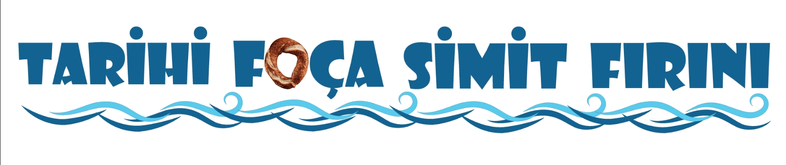

<header class="main-header">
    <div class="header-container">
        <!-- 1. Üç Çizgi Butonu -->
        <button class="hamburger-btn" onclick="toggleMobileMenu()">☰</button>
        
        <!-- 2. Logo -->
        <a href="index.html" class="logo-link">
            
        </a>
        
        <!-- 3. Yandan Açılan Menü (Linklere kapanma özelliği eklendi) -->
        <nav class="desktop-nav" id="mobile-menu">
            <button class="close-menu-btn" onclick="toggleMobileMenu()">✕</button>
            <a href="index.html" onclick="toggleMobileMenu()" data-i18n="navHome">Ana Sayfa</a>
            <a href="index.html#hakkimizda" onclick="toggleMobileMenu()" data-i18n="navAbout">Hakkımızda</a>
            <a href="index.html#subeler" onclick="toggleMobileMenu()" data-i18n="navBranches">Şubelerimiz</a>
        </nav>
        
        <!-- 4. Sağ Butonlar -->
        <div class="header-right-actions">
            <button class="lang-btn" onclick="toggleLanguage()">EN</button>
            <button class="btn-gold" onclick="openBranchModal()" data-i18n="qrBtn">QR Menü</button>
        </div>
    </div>
</header>

<!-- Menü açıldığında arkayı karartacak şeffaf siyahlık -->
<div class="mobile-menu-overlay" id="mobile-overlay" onclick="toggleMobileMenu()"></div>
